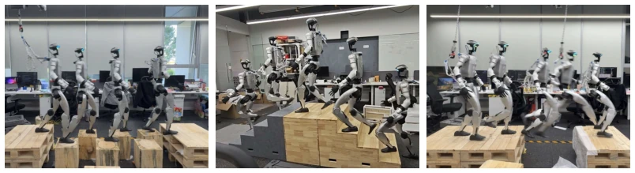
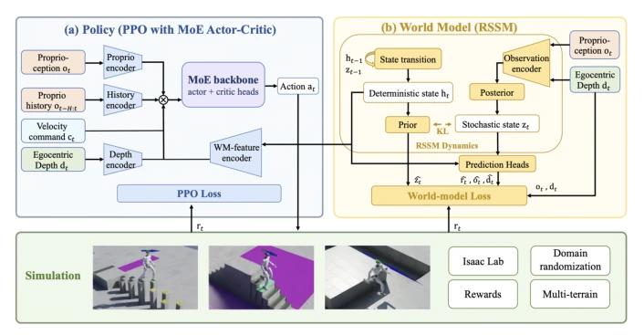
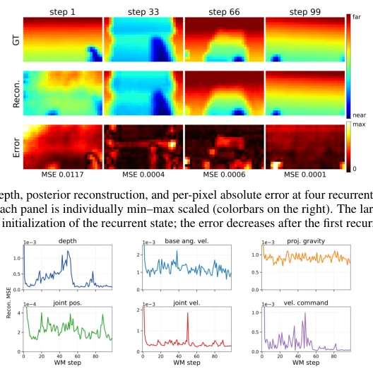

This paper walks a tightrope for robots on fully supported terrain. Traditional RL strategies work well on continuous terrain, but fail on the spot when facing rock fields or steps; this WM-LOCO directly adds a "future-seeing" RSSM module to PPO. The best part is the real-robot deployment; Unitree G1 achieved a 93.3% success rate on real steps and pits, while the baseline was 0% directly in simulation. However, do not overhype it; this World Model did not engage in complex imaginative reasoning, just compressed historical states into features fed to the policy, essentially still end-to-end reinforcement learning. For more complex constraints like balance beams, the authors also admit they cannot handle it. Overall, it is a pragmatic victory in visual motion control; although no "new toys" were invented, "old toys" were fixed to run. It does not require explicit footstep labels, nor offline replay, and has high training efficiency. But the limitation lies in limited terrain types, not covering outdoor unstructured scenes.
Walking on continuous terrain is not difficult for humanoid robots, but in scenarios like "stepping on stones" or "crossing gullies" where sole contact points are sparse, discontinuous, or geometrically constrained, a single misstep can lead to a fall, with very little room for recovery. Existing RL-based strategies mostly rely on current or short-time window observations, lacking foresight [1, 2]. Although BeamDojo [3], RPL [4], etc., introduce foot targets through hierarchical training or distillation, PLANC [6] uses multi-stage teacher distillation, and model-based methods [7] use planning, these often rely on complex mechanisms. Existing World Model methods [8, 9, 10, 11], although used for prediction or reconstruction, do not explicitly focus on sole-constrained terrain, nor quantify the help of prediction signals when feasible foot points are sparse. Therefore, this paper aims to provide predictive context through a jointly trained World Model to solve the problem where a single step mistake leads to failure.

Figure 1: Hardware deployment of WM-LOCO on a Unitree G1 humanoid: (a) stepping stones, (b) stairs, (c) gap. The policy runs from a single onboard depth stream, with no offboard perception and no terrain map.
The core of the framework is the end-to-end joint training of the PPO policy and RSSM world model. Inputs include 5 frames of proprioception, monocular depth maps, and velocity commands. The world model module adopts the RSSM architecture, maintaining deterministic memory $h_t$ and stochastic latent variables $z_t$, learning dynamics through reconstructing proprioception, depth images, and predicting rewards; the loss function includes reconstruction error and KL regularization. The policy network receives proprioception history, velocity commands, depth maps, and predicted features $f_{WM}^t$ output by the world model, fusing inputs through a Mixture of Experts (MoE) backbone. During training, the world model loss and PPO surrogate objective are jointly optimized, with gradients propagated to the shared encoder, requiring no offline replay buffer and not relying on explicit foot contact labels. For sole-constrained terrain, the reward function adds terrain-specific terms on top of standard velocity tracking: step boundary penalties to prevent bypassing, step face penetration penalties to prevent accidental contact, and sequential step contact rewards to encourage correct stepping order. This design allows the policy to obtain forward-looking information through predicted features without explicit footstep planning.

Figure 2: The WM-LOCO framework: a policy block (left) and an RSSM world-model block (right).
Unitree G1 is simulated in IsaacLab, using 8192 parallel environments, with depth map resolution 64x36. The baseline is PPO under the same conditions, with only the world model path removed. Evaluation is divided into three terrain types: steps, gullies, and stepping stones, with Easy/Medium/Hard difficulties. Main metrics are success rate (passing the endpoint within 45 seconds) and gait quality. Simulation results show that on gully and stepping stone terrains, baseline success rates are all 0%, while WM-LOCO ranges between 78.2% and 100%; on step terrain, success rates for both are close, but WM-LOCO has longer stride, lower energy consumption, and smaller pelvic acceleration. Real-robot deployment on Unitree G1 uses Jetson Orin, requiring no external perception or maps, with an average success rate of 93.3% across three terrain types. Ablation analysis indicates good world model reconstruction quality, depth MSE below 1e-3, proving the effectiveness of features.

Figure 3: One-step posterior reconstruction on a WM-LOCO rollout: at each step, the recorded observation is encoded into the recurrent latent and reconstructed as depth and proprioception. Velocity-command resampling is disabled; (b) reports the median across 7 parallel environments.